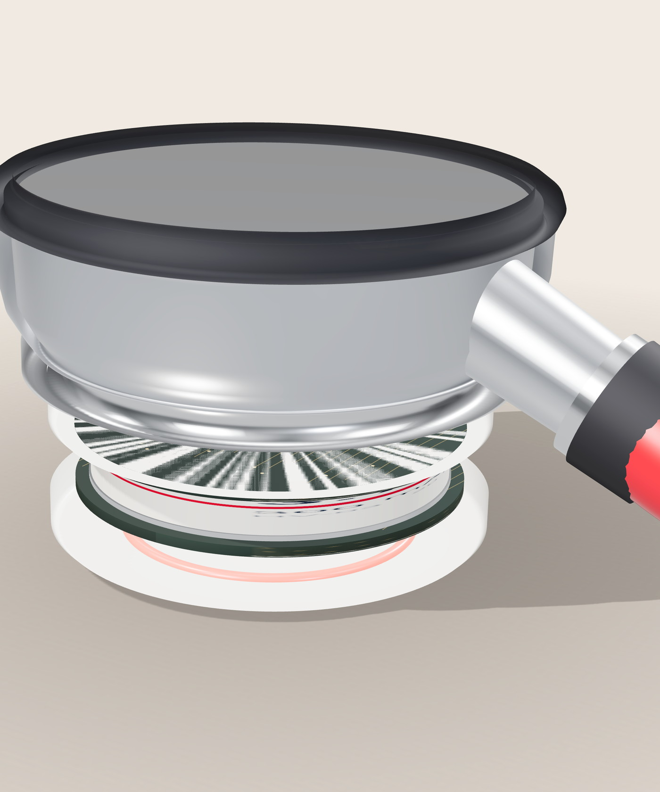
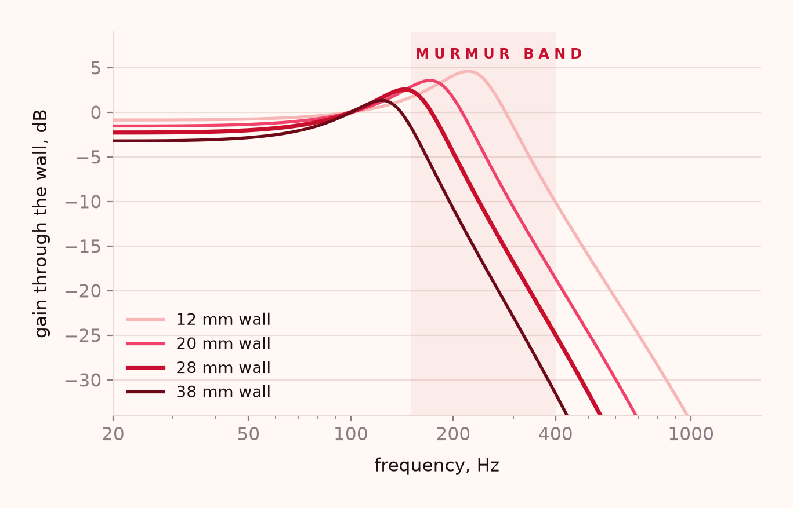
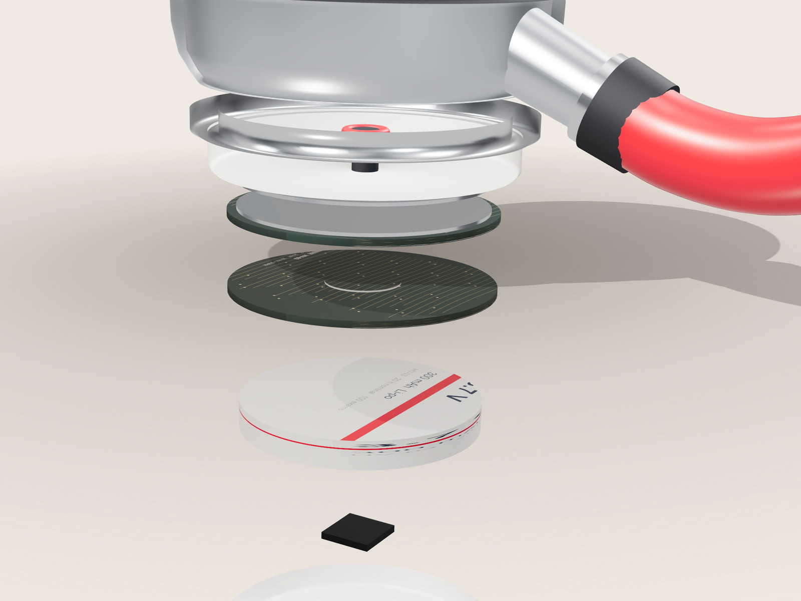

Stethoscope insert · prototype
Every body changes the sound. The stethoscope shouldn't.
Heartware is an insert that replaces the back plate of the stethoscope already in the room. It measures the chest wall from the recording itself, inverts it, and returns the sound that reached the chestpiece — not the sound the body made on the way.

of significant valve disease found by auscultation in patients over 65 — and only below a BMI of 25.
Gardezi 2018 · n = 251
how much the same murmur shifts between body types in our model, before correction.
In-silico · n = 600
the same spread once the wall is estimated per recording and removed.
In-silico · n = 600
trained parameters in the correction. There is no dataset for it to inherit a bias from.
Method
The measurement
This is not a listening problem.
It is a transfer function.
A stethoscope hears the chest wall before it hears the heart. Fat, muscle and rib attenuate the highs, resonate the lows and add a path of their own — so the same valve arrives at a different amplitude in a 60 kg teenager and a 120 kg adult. A clinician comparing that sound to a remembered one has no way to subtract the difference.
Digital stethoscopes do not correct this. They reproduce the wall faithfully, at $250–600, which keeps them in cardiology departments while first contact happens in primary care, nursing homes and home visits, where the acoustic stethoscope is still the only instrument in the room.
The fix is not a better microphone or a louder speaker. It is knowing what the wall did to the sound, and undoing it — per recording, from the recording.

The method
Measure the wall.
Then take it out.
Three things happen between the chestpiece and the screen. None of them is a trained model, and none of them needs to know the patient's weight.
Characterise the path
The valve closures in the recording — S1 and S2 — are broadband transients. Their shape has passed through the wall, so the wall is written into them. Heartware fits the same physical model to those transients and recovers the thickness of the path to within a few millimetres.
Separate the room
A second microphone sits behind a sealed cavity. It hears the room and not the heart, so the room can be subtracted rather than filtered. The signal-quality score is computed from the same two channels.
Invert, or refuse
The wall's response is inverted with a regularised filter, so the correction stops pushing where the noise floor sits. Below a quality threshold the app returns no finding at all and asks for another recording.
Evidence
The correction is arithmetic.
Arithmetic can be checked.
Four results from the model in this repository, with the figures, the sample size
and the failure cases. Every number regenerates from
research/thoracic_model.py.

3.7 mm
RMS error recovering chest-wall thickness from the recording alone, across 600 synthetic subjects. 86% within 5 mm. Nothing about the patient is supplied to the estimator.
1.69 → 0.25 dB
Correcting with one assumed thickness — the obvious shortcut — barely improves on doing nothing. The per-recording estimate is what removes the body dependence.
The part
Not another instrument.
Six parts and a collar.
The insert threads into the cup of the stethoscope a clinic already owns. Interchangeable collars seat it in 44, 46 and 48 mm heads; the acoustic path stays the manufacturer's. Remove it and the instrument is exactly what it was.

The collar threads where the back plate was. The port carries the sound 3 mm to a pair of MEMS microphones, one on the port and one behind a sealed cavity, and the difference between them is the room. The cell, the logic board and the lid stack behind it.
The full specificationOne clinic, one protocol, one echocardiogram.
The engineering record exists: three printed revisions, a working microphone chain, an app that gates its own output. What is missing is the study that turns a correction into a clinical claim — paired recordings and echo in a site that already reads echoes.